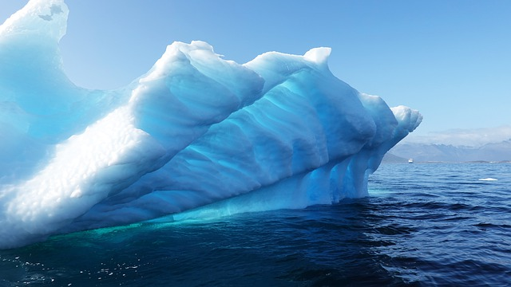
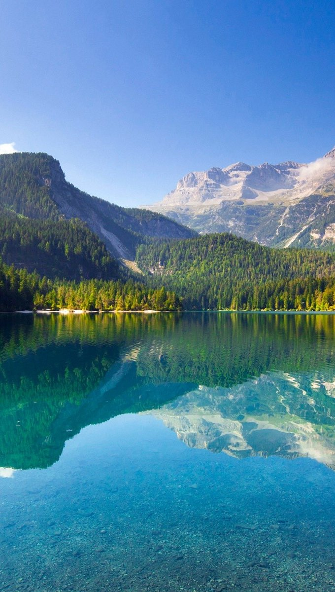

Топ-3 національних парків світу,які варто побачити кожному
- Гренландський національний парк
- Йєллоустоун
- Національний парк" Плітвіцькі озера"
Гренландський національний парк
Гренландський національний парк розташований на острові Гренландія та займає майже третину острова ,972 000 кв.км.основна частина парку -це Гренландський крижаний шельф,який не звільняється від снігового покрову ані взимку,ані влітку.Але зустрічаются території,вільні від льоду.
Що подивитися?Через суворий клімат тут можна побачити недуже багато тварин:вівцебика, моржа,нерпу ,білого ведмідя.
А ще-північне сяйво,величезні айсберги,кришталеві льодовики
Йєллоустоун
Йєллоустон-це найстаріший національний парк у світі,заснований 1 березня 1872 року На його теріторії дрімає супер-вулкан,а більша частина землі у парку вкрита застиглою лавою У Йеллоустоунському парку знаходиться одне з пяти світових гейзерних полів
Що подивитись?Звичайно,вражаючі гейзери-їх більше 3000,водоспади і озера,річки каньйони,печери
У парку живе більше 60 видів звірів,у тому числі й ведмеді грізлі,по ньому переміщуються стада бізонів,можна зустріти більше 300 видів птахів.
Національний парк "Плітвіцькі озера"
Парк Плітвіцькі озера в Хорватії - це близько 30 гектарів в гірсько-лісистої місцевості 16 найчистіших озер,розташованих каскадом ,з водоспадами між ними,і найбільша популяція бурих медведів в Європі
